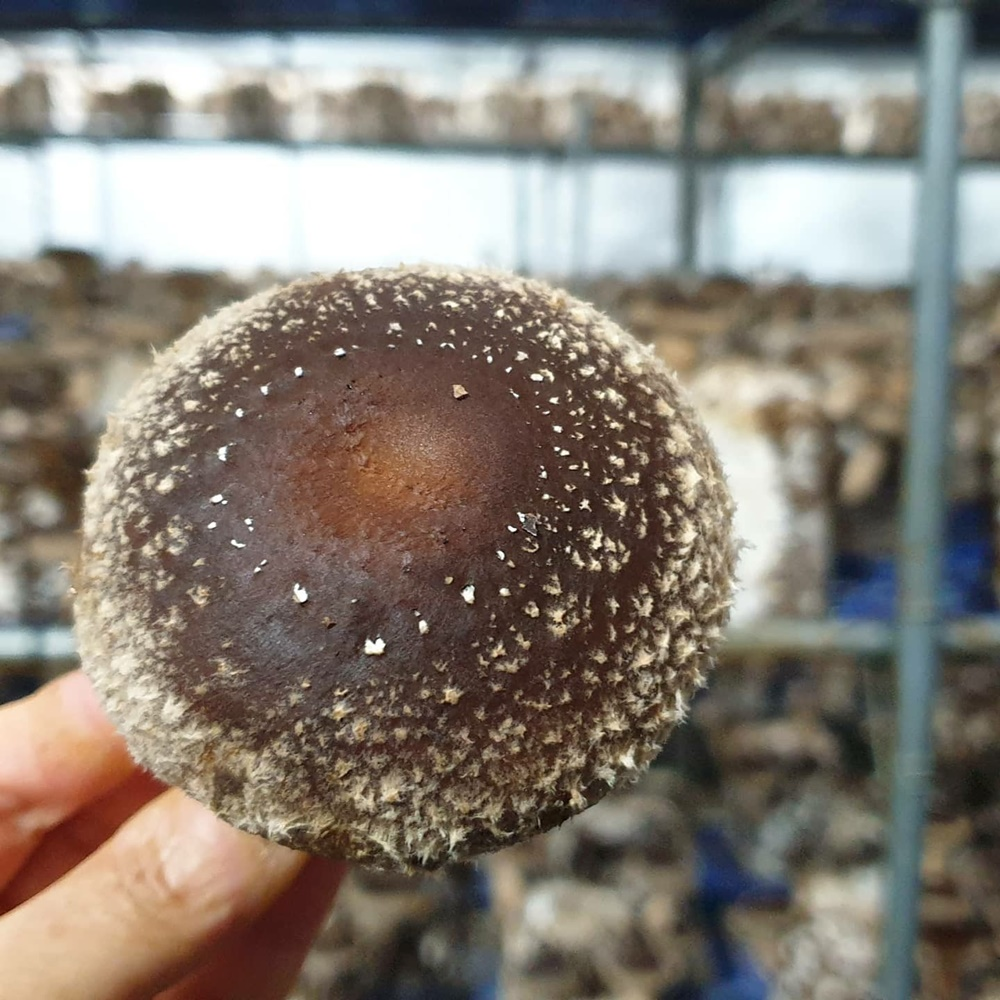
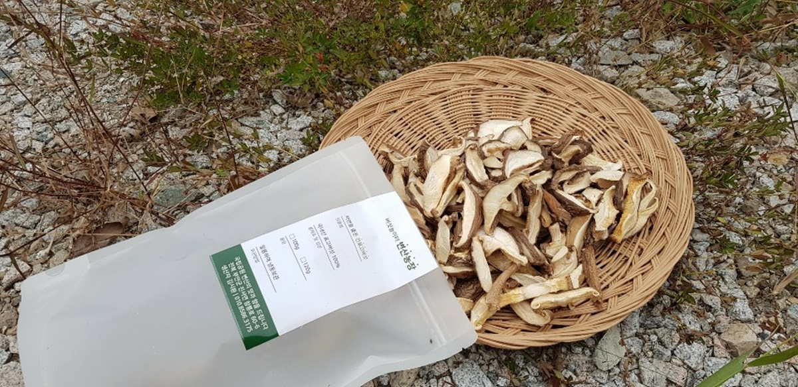

버섯놀이터변산농장-html
- 표고버섯
- 녹각영지버섯
- 상황버섯
표고버섯
변산반도의 한나절 햇살과 저녁노을을 담은 말린 표고버섯 : 향이 풍성하고 육질이 부드러운 변산의 해풍표고버섯을 한나절 햇볕에 잘 말린 자연을 품은 건표고버섯입니다. 친환경 무농약으로 귀농한 버섯놀이터 변산농장의 저희 부부가 고향에 대한 예의를 갖춘 농작물입니다.
변산국립공원의 무농약 국내산 표고버섯의 맛과 향을 드립니다. 내변산의 햇살과 변산반도의 해풍을 담아 곱게 말린 표고버섯입니다
